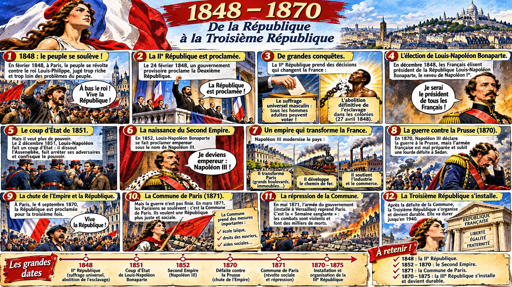

1848-1875
La France change de régime !
Une République, un empereur, une guerre, une révolte et encore une République… Regarde d’abord la vidéo, lis la leçon, découvre la BD, puis complète le texte à trous.
① Regarde la vidéo de la méthode Génération 5
Second Empire et Républiques : retrouve la vidéo 2 du chapitre 1 de la méthode Explorer l’Histoire au CM2, conservée dans le dossier Google Drive de la classe.
Si le lecteur ne s’affiche pas, ouvrir la vidéo dans Google Drive. L’accès dépend des autorisations du fichier. Vidéo © Génération 5, utilisée depuis le Drive de la classe.
② La leçon à retenir
En 1870, la défaite de Sedan met fin au Second Empire et la IIIe République est proclamée. En 1871, Paris connaît une insurrection : la Commune de Paris, sévèrement réprimée. Le traité de Francfort entraîne notamment la perte de l'Alsace et d'une partie de la Lorraine. En 1875, la République se consolide.
③ La bande dessinée illustrée
Lis la planche illustrée dans l’ordre pour retrouver les événements historiques.

Repères · Les dates à connaître
La monarchie tombe. Louis-Napoléon Bonaparte est élu président au suffrage universel masculin.
Louis-Napoléon Bonaparte prend le pouvoir par un coup d'État en 1851 et devient Napoléon III en 1852.
Défaite de Sedan, proclamation de la IIIe République, puis Commune de Paris en 1871.
Des lois constitutionnelles organisent durablement la IIIe République.
④ Complète le texte à trous
En 1851, Louis-Napoléon réalise un .
En 1870, Napoléon III est capturé à .
En 1871, les Parisiens se soulèvent lors de la .
⑤ Défi n° 2 : le quiz de l'historien
Score : 0 / 7
Prolongement pédagogique pour réviser la séance « Second Empire et Républiques ». Les fiches et la leçon étudiées en classe restent les documents de référence.